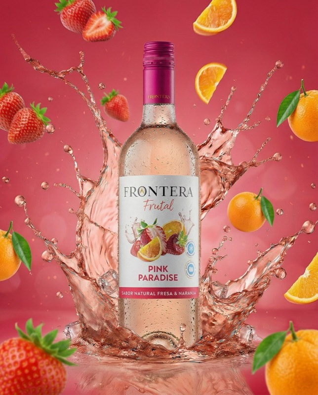
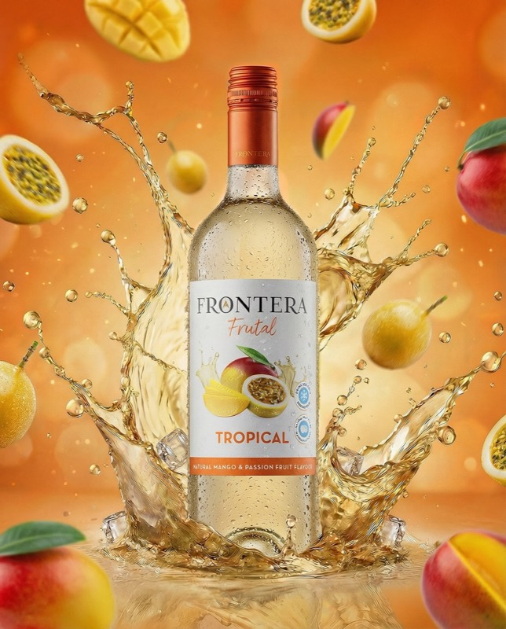
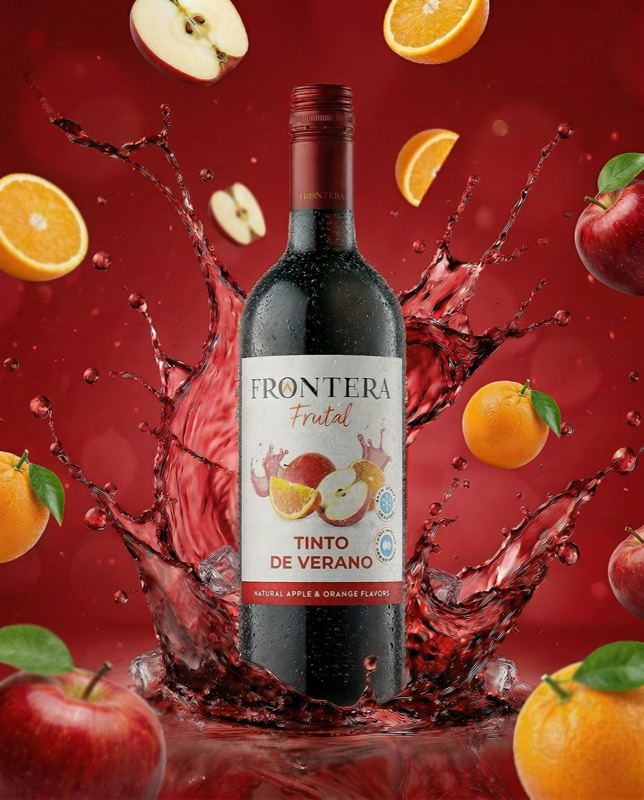

Confidencial · Brief Creativo · Abril 2026

Guion de Video — Serie Cocktails
Desplazar
Confidencial · Brief Creativo · Abril 2026
Guion de Video — Serie Cocktails
Resumen del Proyecto
Videos de recetas con cortes dinámicos y texto sobre impresión en cursiva bold, en el estilo visual Ballantine's — cinematográfico, oscuro y premium. Cada pieza presenta un producto Frontera Frutal a través de su cocktail, con pantalla dividida horizontal para ingredientes y un plano héroe final de producto.
Video 01
Sour Paradise
Producto
Frontera Pink Paradise
Video 02
Tropical Highball
Producto
Frontera Tropical
Video 03
Summer Negroni
Producto
Frontera Summer Red

Sour ParadiseIngredientes

Tropical HighballIngredientes

Summer NegroniIngredientes
Dirección Visual
Ritmo de Edición
Estilo Ballantine's
Cortes que acompañan el ritmo musical — cinematográficos, oscuros y atmosféricos. Sin disolvencias entre tomas de acción. La toma de decoración (07) ofrece un instante de cámara lenta que respira antes del plano final.
Texto
Bold Italic — Sobre Impresión
Los ingredientes aparecen en cursiva negrita — estilo Playfair Display Bold Italic — palabra por palabra. Letra blanca con sombra suave para legibilidad sobre cualquier fondo. Entrada directa al corte.
Pantalla Dividida
Split Horizontal — Top / Bottom
Las tomas 03 y 04 de cada video usan división horizontal: panel superior con ingredientes en movimiento, panel inferior con el producto estático. Línea de corte limpia sin gradiente. La división aparece con el corte.
Sistema de Color
Paleta por Producto
Cada video opera dentro del universo cromático de su producto. Pink Paradise: rosas y magenta. Tropical: naranja cálido y ámbar. Summer Red: carmesí profundo. Los fondos y splashes respetan la paleta de cada pieza.
Lenguaje de Cámara
Bajo, Macro, Cenital
Ángulo bajo para reveals de producto, macro cenital para vertidos de líquido y lateral cercano para momentos de decoración. Sin planos generales hasta el plano final héroe en segundos 10–12.
Plano Final
Cierre Coherente de Serie
Los tres videos terminan con la misma estructura: cocktail terminado + botella del producto, plano amplio estático, superficie del color del producto, logo Frontera al centro inferior. Coherencia de serie.
Especificaciones Técnicas